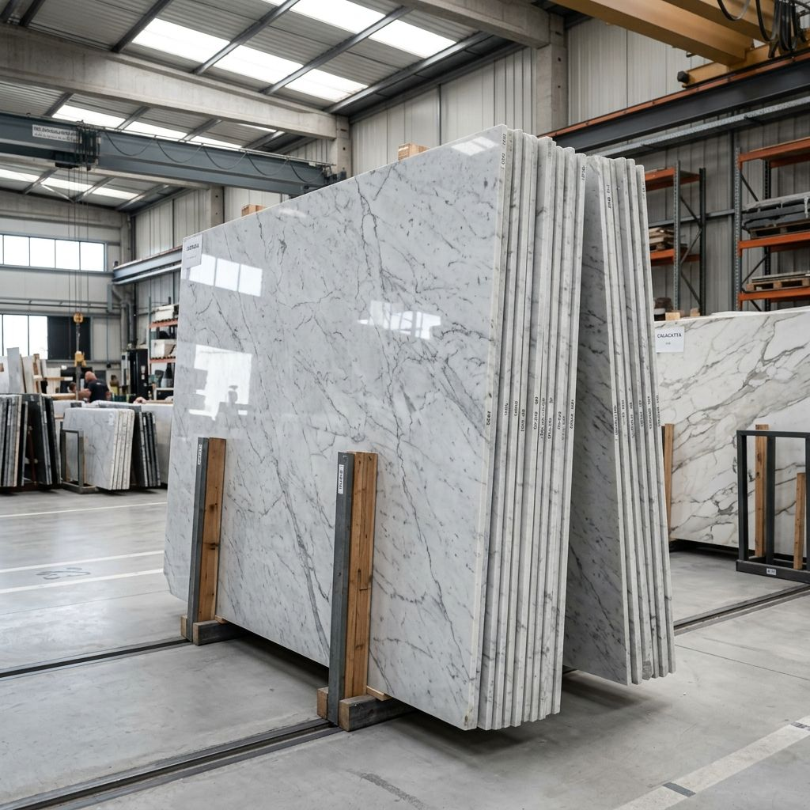

Luxury Stone Bathtubs · 01
Monolithic Marble Bathtubs
Freestanding oval or rectangular soaking tubs sculpted from single blocks of white or green marble.
Monolithic freestanding bathtubs, hand-sculpted from individual solid blocks of premium white marble, green marble, and limestone.
Our stone bathtubs represent the ultimate in luxury bathroom design. Carved by hand from an individual massive block of select Indian marble, each bathtub is completely unique in its veining, coloration, and shape. A solid stone bathtub acts as a statement art piece, retaining water heat much longer than standard acrylic tubs.
We work closely with architects and interior designers, calculating dry and wet weights, tailoring sloping drainage, and choosing the perfect block at the quarry to ensure consistency across the entire bathroom suite.
A finished stone bathtub weighs between 800 kg and 1,200 kg empty. You must verify that your floor structure is engineered to support the combined weight of the tub, water, and occupants.
We construct custom double-walled wooden crates reinforced with steel bands. The bathtub is padded internally with heavy-density foam to absorb shock during sea transit.
Yes. We sculpt to your precise CAD drawings, adjusting parameters like length, height, backrest slope, and overflow placement.